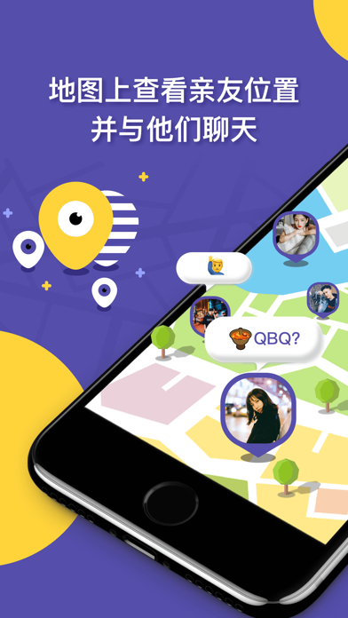

ZAI 是什么？五分钟从完全不懂到跟好友互相看到位置
第一次用 ZAI 不知道从哪下手？这篇带路文从零讲起，五分钟走完下载安装到第一次共享位置的全流程，不需要任何技术基础。
这篇能带你从完全不懂到用起来，不需要任何基础。
它到底是干嘛的？一个生活化类比
你有没有过这种时刻：朋友说"我到楼下了"，你赶紧跑出去张望，却发现他其实还在红绿灯那卡着；或者爸妈出门买菜一直没消息，你想打个电话又怕他们在地铁上接不到。
ZAI 就是解决这类场景的——zai官网上介绍得很清楚，你可以把它理解成一个实时位置共享聊天的 App。加了好友之后，双方在地图上互相能看到对方的头像气泡飘在哪里，还有个消息气泡挂在旁边，跟地图上的角色差不多。对方走到公司、到家、到奶茶店，你这边地图上的小头像就跟着动。
核心的那个"互相看位置"功能，官方说了，永久免费，不花钱也能用得好好的。会员功能是锦上添花的东西，要不要开先别急。

五分钟上手：从下载到第一次共享
跟着下面这几步做，全程不超过五分钟。
1. 下载安装
安装包可以从官方下载拿，也可以直接去应用商店搜 ZAI 找到图标安装。国内用户走国内的应用商店，海外的用 App Store 或 Google Play 都可以。安装完打开，用手机号注册——短信验证码一发就到，填完就进。
2. 加好友
注册进来之后点右上角的加好友按钮，可以输入对方的 ZAI 号，也可以扫二维码，还能通过手机通讯录匹配找到已经在用的朋友。注意了：ZAI 的规则是"必须双方互加才能看到位置"——你加了他，他没回你，你是看不到他在哪的。所以加完好友记得跟对方说一声，让他也回加你一下。
3. 打开位置共享（重点在对方的手机）
加完好友，默认双方都还没开启位置共享。你这边打开共享很简单：点头像 → 找到位置共享开关 → 打开就行。但有个事得提前说——对方的手机也得正确设置，不然他那边位置不更新，你这边地图上他的头像就卡死不动，这也是新手最常遇到的问题。
安卓用户（大部分读者可能是这个阵营）得把三件事做好：自启动开了、省电优化里把 ZAI 设为忽略、多任务界面里把 ZAI 锁定。少了任何一项，手机后台就可能把 ZAI 杀掉，位置就停更了。iOS 用户更简单些，确保"始终定位"和"后台 App 刷新"开着就行。
做完这三步，锁屏等 15 分钟再看——如果地图上对方的头像开始跟着走了，恭喜你，第一次共享位置成功了。
上手后先玩这三个功能
位置共享跑通之后，这三个功能是新手最值得先摸清楚的。
查电量
你可以直接在 ZAI 里看到好友手机的剩余电量。别小看这个——冬天户外手机掉电快、高铁上信号差，电量低的时候你就知道"他可能不是故意不回消息"。点好友头像 → 看详情卡，电量数字就在那躺着，一目了然。
发射动态表情
聊天框旁边有个表情按钮，不仅能发表情包，还有那种会在对方地图头像上飘起来的动态表情——比如发个爱心过去，对方地图上的头像就被爱心罩一下，很好玩。适合"我到啦""等你呢"这种不用发文字的轻量互动。
看历史轨迹（免费也能看临时）
会员功能之一是能回看过去的位置轨迹——比如"他昨天下午去哪了"。免费用户也不是完全看不了，官方给了两条路：看广告换临时会员（看一个广告换几小时到一天的会员体验），或者做任务。建议你先用"看广告换临时会员"试一次，看看这个功能对你值不值，再决定要不要开会员。
小白的三个常见疑问
问：位置一直不更新怎么办？
先别慌，九成不是 ZAI 的问题。更完整的排查步骤可以翻zai中文文档，写得挺细的。按命中率排序来查：先看对方手机的保活三件套做对了没（安卓自启动、省电忽略、多任务锁定），然后看位置权限是不是被系统升级时回退成"仅使用期间"了，再看对方是不是没电关机或者在移动中（移动时系统反而可能限制后台，停下会自动追平）。最省事的做法就是：装好当天就让对方锁屏走动五分钟验证一次，把问题解决在刚装的时候。
问：免费版和会员差多少？
核心的"双向实时位置共享"免费版已经有了。会员解锁的主要是三类东西：历史轨迹回溯、到达/离开地点提醒、免广告。还有个 VIP 会员比普通会员多一些权益，但包月也就十几块钱，想体验的话建议先看广告换一天临时会员试试，觉得够用再订阅，毕竟订阅制取消起来有点麻烦。
问：隐私安全吗？
ZAI 的规则设计本身是保护隐私的：必须双方互加好友才能看位置，共享开关随时能关，你自己还能设"只在跟好友聊天时共享"这种更细的开关。不用担心陌生人看到你在哪——只有你主动加、对方也回加的好友才行。
写在最后
ZAI 这个 App 最核心的体验其实很简单：让在乎的人互相知道"你在哪"。定位不准的事情偶尔有，但十有八九是手机设置的问题，把保活三件套调对了基本就稳了。
如果日常用下来觉得"到点提醒"和"轨迹回顾"真能帮到你，花十几块钱开个包月也不算贵；但如果只是偶尔看看对方在哪，免费版完全够用。毕竟官方说了——定位是免费的，买会员也不会让定位更准。
进阶的玩法比如卫星图层切换、高德地图源（海外用户看国内好友更清楚）、聊天的已读未读状态，值得慢慢摸。如果你习惯用代码仓库管理资料备份，GitHub、Gitee 和 GitCode 上也都有整理好的对应目录。但对新手来说，先把"加好友 → 开共享 → 地图上看到对方头像在动"这条链路跑通，就已经够用了。